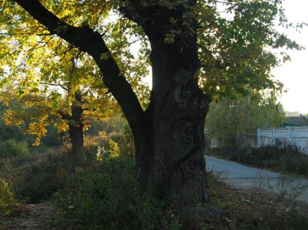
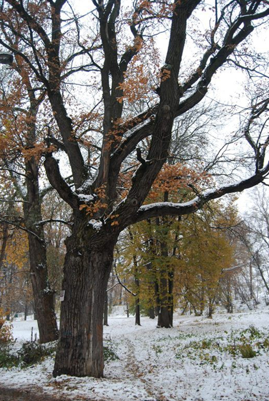

Старейшее дерево в Твери

Старейшее дерево в Твери находится в парке-«воксале».

Возраст "царского" дуба оказался неожиданно небольшим - ему 193 года. То есть дуб родился в 1821 году и он ровесник здания, построенного Николя Леграндом-младшим. Наводнение 1811 года было беспощадным ко всем насаждениям "тверского версаля". Зато понятно, что легенда о царе Александре I, скорее всего, правдива. Известно, что император посетил Тверь в конце августа 1824 года. Это вполне укладывается в возможность его посещения новопостроенного здания театра и посадки именно этого дерева. Во всяком случае, "благословенного" царя этот дуб должен помнить.